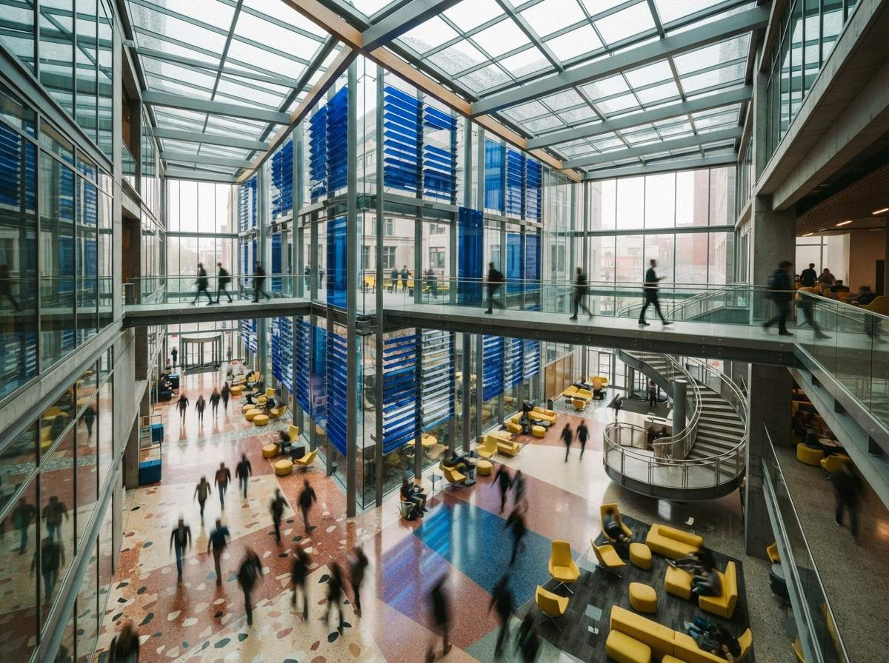

Open a fresh AI exterior on a thirty-inch monitor and the first pass looks great. Then the principal leans in and points the cursor at the plaza, and there it is: a woman with a coffee cup fused to her wrist, a man whose far leg ends at the ankle, two figures sharing the same face thirty feet apart, and a child scaled to the height of the door handle. The building is fine. The crowd is a horror show, and that is the part the client zoomed into.
Entourage is the oldest trick in architectural drawing. The little figures Schinkel and the Beaux-Arts draftsmen tucked into their elevations were never decoration. They told you how big the building was, who it was for, and what kind of day it was. AI renderers inherited the habit and dropped the intent. They will populate any scene on command, instantly and for free, and they will do it without knowing a single thing about your project. That gap, between a crowd that is present and a crowd that belongs, is where most AI renders give themselves away.
Entourage was never just scale figures
A figure in a render does three jobs at once. It sets scale, so the eye reads the ceiling height and the width of the stair. It declares program, because a teenager with a skateboard says public plaza and a man in a suit checking his watch says corporate lobby, and you cannot show both in the same picture without confusing the client about what they are buying. And it sets mood, the difference between a building that feels used and loved and one that feels like an empty render of a building.
Get the people right and the client pictures themselves inside. Get them wrong and the whole image tips into the uncanny, even when the architecture is flawless, because a person looks at a person before they look at a wall. This is the quiet reason a technically perfect render can still land flat. The geometry was solved and the crowd was an afterthought, and the human eye weights the crowd more heavily than the wall behind it.

What AI gets wrong about the crowd
The failures cluster into three, and once you can name them you cannot stop seeing them.
The same beige people everywhere
Image models reach for the center of their training data, so they hand you the same handful of figures over and over: a couple in neutral coats, a lone woman with a tote, a businessman mid-stride. They show up in your community library, your clinic and your penthouse with equal confidence, because the model has no program to match them to. As the tools converge on the same look, the crowd converges too, and an experienced reviewer starts to recognize the cast. A render full of stock-model strangers reads, correctly, as a render nobody directed.
The uncanny zoom
A model optimizes for a convincing thumbnail, not a correct enlargement. At fit-to-screen the people pass. At one hundred percent, the zoom every serious client uses, the hands grow a sixth finger, the faces smear, the feet melt into the paving and the shadows do not match the body that casts them. It is the same hallucination problem that afflicts the architecture, just harder to catch because we forgive geometry faster than we forgive a broken face. Run the same zoom-level QA you use on the building on the people, and you will find more there.
The wrong program, doing nothing
Even when a figure is clean, it is often inert, or worse, busy with the wrong activity. Renders fill up with people standing and facing the camera like extras waiting for a cue, when the building is supposed to be full of people using it. A library wants someone reading, a kid on the floor with a book, a librarian at a desk. A transit hall wants movement and luggage. The model gives you mannequins in motion-capture neutral, and a client cannot imagine living in a building whose occupants have nothing to do.
The architecture is generated from your geometry. The crowd is generated from a stereotype. One of those you reviewed. The other you let the machine cast.
How to actually fix the crowd
The fix is not to ban AI people. It is to stop letting one method carry the whole image, and to spend your attention where the client's will go. The governing rule is distance.
Match the method to the distance
For figures in the deep background, soft and small, the AI-generated crowd is fine. Nobody zooms a blur, and the people there are doing the mood job, not the detail job. For anyone in the foreground or middle ground, where a face is readable, swap the hallucinated figure for a real photo-cutout or a 3D entourage asset. The libraries built into Enscape, Twinmotion and D5, plus stock cutout packs, give you posed, scaled, programme-appropriate people that hold up at full zoom because they are photographs of actual humans, not a model's guess at one. You place them, so you control where they look and what they are doing.
Mask the people, keep the building
The fast middle path, and the one worth learning, is targeted regeneration. Mask only the figure that is broken and inpaint or regenerate that region in ComfyUI, or paint over it with generative fill in Photoshop, leaving the architecture you already approved untouched. This is the same hand-finishing discipline that separates a usable AI render from a raw one, applied to the crowd: the last mile is done by hand, and the people are most of that last mile. A five-minute pass replacing two foreground figures and deleting a melted one will do more for credibility than another hour on the lighting.
Direct, do not just generate
If you are prompting the crowd, prompt it like a director, not a headcount. Name the program, the activity and the time of day. Ask for fewer people doing specific things rather than a plaza full of extras. The planting follows the same logic: AI loves to drop generic shrubs and impossible trees at the building's base, so treat greenery as something you specify and check, not something you accept. A bench with one person eating lunch under a tree that could grow in that climate beats a packed atrium of strangers every time.
A short entourage check before the render goes out
- Zoom to one hundred percent. Count fingers, check faces, look at where feet meet the ground. Fix or delete anything that breaks. The client will run this check, so run it first.
- Scale pass. Heads should sit near a consistent eye-line on flat ground. A figure too tall or too short rereads the whole building's size and undoes your proportions.
- Program match. Ask out loud who these people are and whether they belong in this building. If the same figure would fit a bank and a skate park, it is wrong for both.
- Repetition. Scan for the same face or outfit appearing twice. One duplicate is all it takes to announce the image was machine-cast.
- Doing something. Every readable figure should have a believable activity tied to the program. Standing and facing out is the tell of an empty render wearing a crowd.
Our take: cast the room you designed
The people are not garnish. They are the fastest signal a client reads about whether your building works, and they are the single easiest thing to get visibly, embarrassingly wrong with AI. The good news is that the fix is cheap. You do not need a new tool or a bigger model. You need to treat the crowd as a thing you direct, the way you already direct the camera and the light, and to spend on the foreground figures the same care you would never skip on a hand drawing.
So let the machine fill the far edges of the plaza. Then go cast the front of the room yourself: a few real people, scaled right, doing the thing your building exists to let them do. It is ten minutes, and it is the difference between a render the client lives inside and one they squint at, looking for the mistake they can already feel.
A building is judged by who you put in it. Stop letting a stranger do the casting.
Based on this week's intel sweep of 2026 AI rendering discussion for architects, including community threads on enhancing renders and adding detail in ComfyUI and Photoshop, vendor entourage libraries in the real-time engines named, and Vista Studios hands-on use of AI and asset-based entourage on live client renders. Tool features change; verify current capabilities before relying on any one. No affiliate relationship with any tool named.